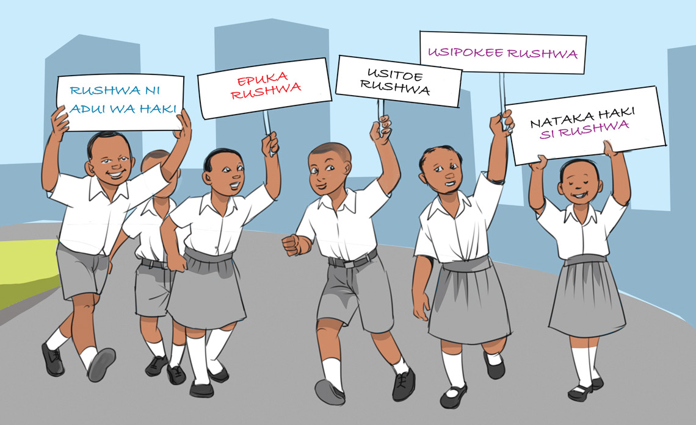

Kielelezo namba 7: Watoto wakishiriki kupinga rushwaKielelezo namba 7: Watoto wakishiriki kupinga rushwa
Kazi ya kufanya namba 17
Orodhesha miradi ya maendeleo inayotekelezwa na serikali, kisha:
Swali la kwanza. Andika faida ya jamii kushiriki katika kuzuia vitendo vya rushwa katika miradi hiyo.
Swali la pili. Andika madhara ya vitendo vya rushwa katika miradi hiyo.
Kushirikiana na watoto wengine katika jamii na Taifa
Watoto ndio tegemeo la jamii na Taifa. Hivyo, ni wajibu wa mtoto kushirikiana na watoto wengine katika jamii na Taifa ili kujenga misingi ya maendeleo ya jamii zao. Ushirikiano na watoto wengine katika jamii na Taifa huwajengea uwezekano wa kufanya kazi pamoja sasa na baadaye. Pia, hujenga umoja wa watoto kitaifa. Hivyo, ni wajibu wa watoto, kushirikiana na watoto wengine ili kujenga uhusiano na umoja kati yao kwa maendeleo ya jamii na Taifa.